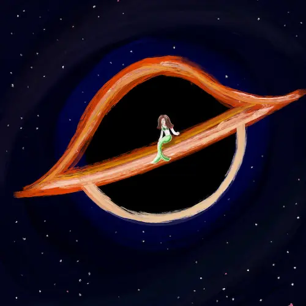
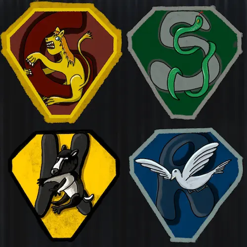

Inktober, deuxième partie
Suite des créations réalisées durant le défi artistique du mois.
J17 – Collide / Collision
Une apparition inattendue,
Mon œil éblouis;
Un instant suspendu
Aux airs de paradis.
Puis l’impact fait rage,
Tout s’effondre, se déchire.
Dans mon cœur un orage,
Un cratère pour m’ensevelir.
Cette lueur dans mon ciel
Qui a brûlé ma raison,
Elle a tout emporté avec elle.
Après la collision.
J18 - Moon / Lune

Un lapin lunaire
Adepte de gruyère
Creuse des galeries par envie,
De jour comme de nuit.
Quand le soleil le lui permet,
Il lève des yeux émerveillés
Sur ce monde lointain
Qu’il sait rempli de lapins.
J19 – Loop / Boucle
À l’aube, comme je l’attendais
Accueillir la vie, la contempler,
Chérir chacune des prouesses
De ce printemps de hardiesse.
Le jour est fait de folie.
Sous le ciel azuré,
Les danses, la joie de l’été,
Me portent en harmonie.
Au crépuscule, une grisaille glacée
Se pose sur les lacs, les forêts.
Le souffle court, en détresse
C’est l’automne qui révèle mes faiblesses.
La nuit noire résonne d’un cri
Comme la fin sonnée.
L’hiver sur mon cœur s’est posé.
Je ne trouve plus ma place ici.
J20 – Sprout / Germer, pousse
Quand scintillent les rayons du soleil
Que dans la terre, la vie s’éveille;
Quand s’immisce la chaleur
Et qu’elle anime ton cœur,
Tu sais qu’est venu le temps
De quérir la tiédeur du vent.
J21 - Fuzzy / Duveteux, vaporeux
Des boules de coton
Aux odeurs de bonbons
Flottent dans les cieux,
Nuages duveteux.
Un chemin de couleurs
Accueille les pas légers
De mon amie la splendeur
Doudouille, licorne ailée.
J22 - Open / Ouverture
Autour de toi, une barrière,
Érigée minutieusement
Pour laisser en arrière
Ce que tu es vraiment.
Tu attires pourtant jusqu’à toi
Ceux qui entendent ta voix,
Et tu les laisses orbiter
À l’horizon de tes secrets.
Par accident, je le crains,
J’ai franchis le chemin
De ta lumière à ton obscurité,
De l’ignorance de l’ignoré;
Ta singularité.
J23 – Leak / Fuite
Comme d’un vague espoir
Je me souviens d’un soir,
Ou peut-être d’un matin
T’avoir aperçu dans le train.
Moi qui implorais tes mots,
Qui cherchais ton affection,
Quand j’ai frôlé ton dos
Je suis tombée en affliction.
Comment aurais-je pu
Me confronter à tes yeux
Et sourire encore un peu
Quand je t’avais déjà perdu...
Mais que vois-je aujourd’hui ?
Ton être sur les quais.
Si cette fois je ne fuis,
Saurais-je te retrouver ?
Il y a autre chose, mais je ne suis pas certaine que ce soit adapté à ce thème. C’est un peu l’opposé de ce premier poème. En tout cas il y a comme des regrets et de la tristesse dans ces deux textes. J’aimerais parvenir à écrire des poèmes joyeux et amusants, comme ceux du lapin lunaire et de la licorne rose dans les boules de coton.
Ce que j’ai dit, ce que j’ai fait
Jamais je ne l’oublierai.
Et tes silences, et tes non-dits
Écorchent encore ce que je suis.
Si un jour tu passais
Je te reconnaîtrai
Mais je détournerai les yeux
Me murmurant en vœu
Que de ton côté tu ne vois
Qu’une inconnue, loin de toi.
J24 – Extinct / Éteint, disparu
Je marche dans les plaines,
Au cœur des bois,
Le long de la Seine,
Et tout diffère cette fois.
Qu’est-ce que ce sentiment ?
Vivrai-je un rêve,
Un nouveau temps ?
J’accueille avec joie la trêve.
Un chevreuil par-ci,
Un blaireau par-là,
C’est même un héron que voici
Virevoltant de plus en plus bas.
Je ne vois que bonheur,
Liberté et jouissance,
Épanouissement à toute heure
Sur les terres d’abondance.
De nouveau j’apprécie
Les cavalcades en plein air.
Enfin ils sont partis
Ceux qui faisaient tout taire.
Pas facile d’écrire quelque chose de gai et plein d’espoir avec un thème aussi restreint. Je suis plutôt contente du résultat. Je vais essayer de terminer le défi avec des poèmes ou dessins positifs.
J25 - Splat / Splash
Splish splash,
Ça mouille !
Je patauge dans mes bottes,
Ciré vert sur le dos.
Avec mon air de grenouille,
Comme on pratique un art, je barbote.
On pourrait bien croire que j’aime l’eau.
Splish splash.
J26 – Connect / Connecté
De tout ton corps,
Tu es le prêtre,
Relié aux autres êtres,
Tenant leur sort.
Tu sens tout,
Tu compatis,
Tu perçois tout
De la Nature, de la Vie.
Heureux d’endurer,
Tu sauveras
Ce cadeau de la forêt
Qui un jour passera
De supplice
À délice.
Ce poème parle de Rena et de sa connection spéciale et précieuse avec la Nature. Il en souffre au début, il la prend pour une malédiction. Petit à petit, il apprend à écouter et peut agir grâce à elle. Il prend conscience qu’il s’agit d’un don.
J27 - Spark / Étincelles
Les cieux éclatés
En milliers d’étoiles
Scintillent de reflets,
Peignent une toile.
Sur nos lèvres, un sourire
Quand au-dessus de nos têtes
Commencent à s’ouvrir
Les corolles de fête.
Feux colorés,
Bourgeons de lumières
Viennent illuminer
Les chemins, les rivières.
J28 – Crispy / Croustillant
Elle craque, elle croque, la gaufrette épaisse. Et son cœur est fondant et crémeux. J’ai bien fait de craquer.
J29 - Patch / Écusson
Ce thème, dont la traduction la plus pertinente reste le mot patch, comme un patch anti-tabac, ne m’inspirait pas du tout. La traduction par écusson, un peu moins commune, m’a sauvé. C’est Diatomée qui m’a dit que je pouvais réinventer les écussons de Poudlard, qui est si chère à mon cœur. En fin de compte ils ne ressemblent pas à grand-chose, mais je suis bien contente.
J30 – Slither / Se glisser
Je la sens qui se glisse,
Qui s’insinue, qui s'immisce,
L’excitation, si douce.
Mes sens s’émoussent.
Elle susurre à mon sang
Sensuellement, elle siffle
Quelle soif, je ressens…
Ses sourires, son souffle.
J31 – Risk / Risque
Un pied devant l’autre
Je franchis la ligne.
Un pas après l’autre
Je suis les signes.
Plus rien pour me retenir,
Plus de doutes, de sursis.
Il n’y a plus que des sourires
Je m’écoute, je vis.
Et voici le dernier jour qui s’avance. Le risque ici, c’est de vivre.
Ce défi est terminé. C’était long et assez fastidieux, mais il y a de bonnes choses dans mes « créations ». Les dessins ne sont pas folichons, c’est certain. Ils dégagent quand-même un petit quelque chose au niveau de l’idée, peut-être. J’aime bien ma licorne. Quant aux textes, ils ne feront nullement concurrence à Victor Hugo ou Charles Baudelaire, cependant quelques vers isolés sont agréables. Et la chute de mon premier texte restera gravé dans les mémoires : « Crystal Meth ». 😁